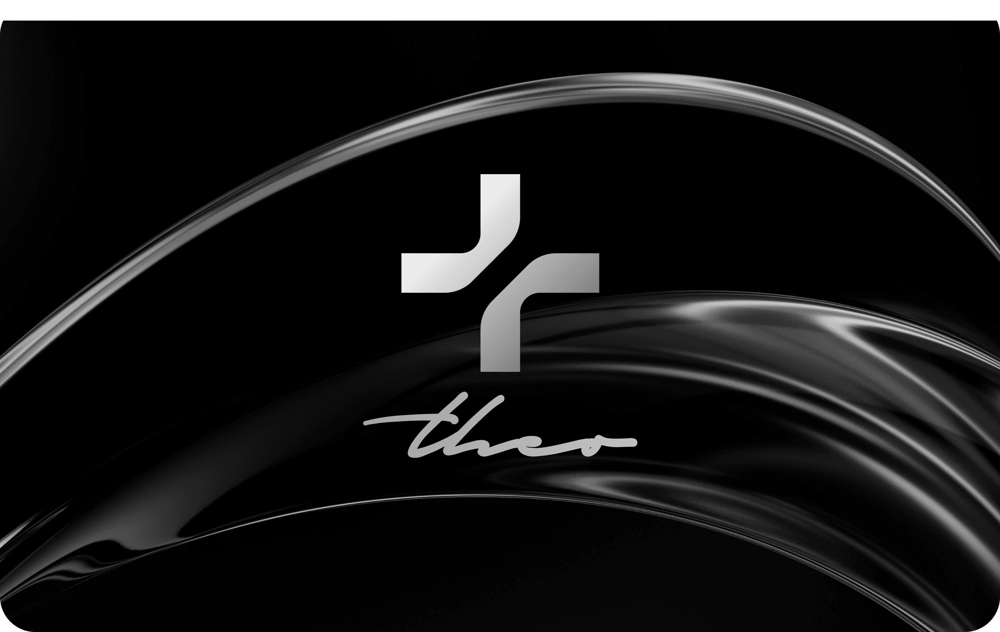

Theo Agency
Reimagining a creative brand for the next era of digital storytelling.

Project Overview
This project focused on redefining the brand’s identity to create a fresh, compelling presence that resonates across all touchpoints. The aim was to develop a cohesive and memorable visual language that reflects the brand’s values while positioning it for future growth. Collaborating closely with stakeholders, we established clear objectives around brand messaging, visual consistency, and audience engagement. From initial concept exploration to the final rollout, every phase was guided by strategic insight and creative storytelling. Our role was to translate the brand’s essence into a unified design system that could be applied seamlessly across marketing materials, digital platforms, and product experiences. We started with discovery workshops and stakeholder interviews to align on vision, define core narratives, and identify opportunities for differentiation. This foundation became the driving force behind a bold and authentic rebrand.
In a rapidly evolving market, the brand came to us with a focused goal — to reinvent their identity in a way that authentically reflected their core values while positioning them for long-term growth. Their previous branding felt outdated, inconsistent, and disconnected across channels, which hindered recognition and customer loyalty. The challenge was to create a unified, flexible brand system that could adapt seamlessly across all touchpoints and resonate deeply with both existing and new audiences.
Immersive Experience Design
Once the strategy was finalized, we moved into the creative and implementation phases. Our design process began with mood boards and initial brand concepts to explore visual direction, tone, and style. After stakeholder approval, we developed comprehensive brand guidelines and refined assets, including logos, typography, and color palettes. These elements formed the foundation of a cohesive brand system, ensuring consistency across all future applications and touchpoints.
- Flexible Layouts
- Adaptive Brand Assets
- Fluid Layouts
Brand Engagement
Ensuring a flexible, device-agnostic brand presence was a key focus throughout the rebranding process. With audiences interacting across a variety of platforms—ranging from large desktops to smartphones—we embraced a mobile-first approach to design. All visual elements and layouts were crafted using scalable grids, adaptable containers, and responsive breakpoints to maintain brand integrity and clarity on any screen. Rigorous testing was conducted across multiple browsers, operating systems, and real-world devices to confirm consistent appearance and performance. Additionally, we optimized asset delivery and loading speeds through techniques like lazy loading and asset compression. The outcome: a cohesive, engaging brand experience that resonates seamlessly wherever users connect.